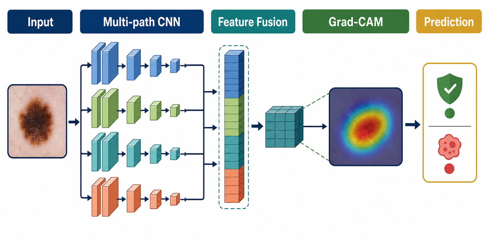
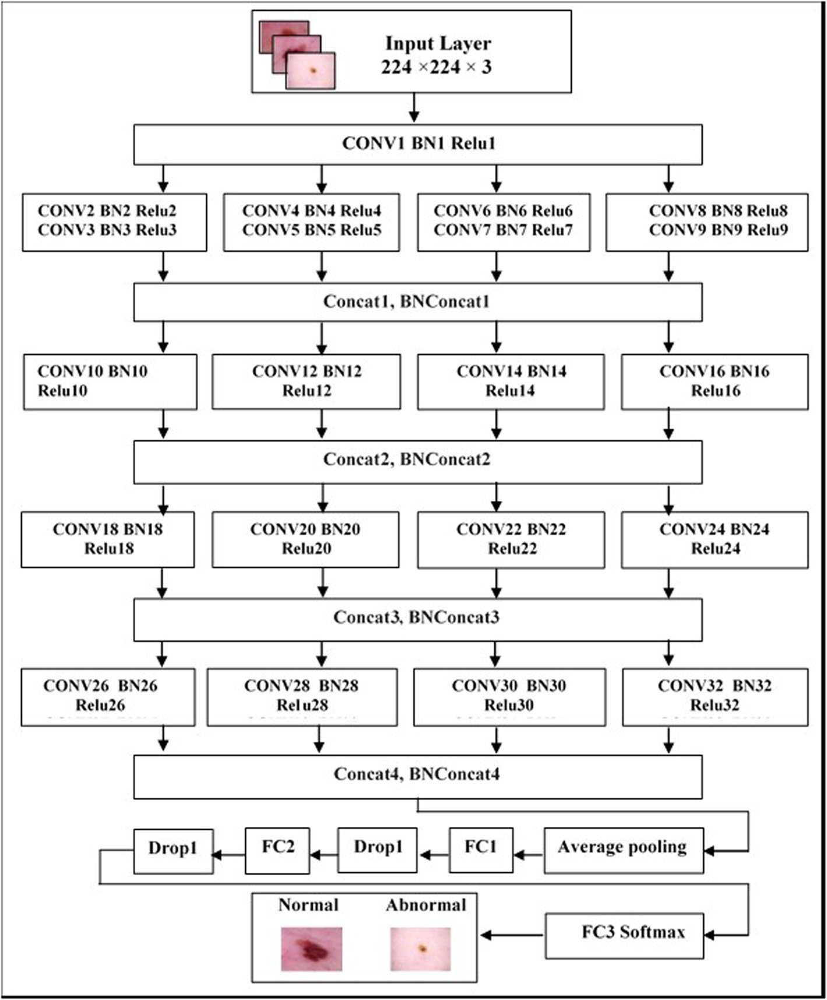
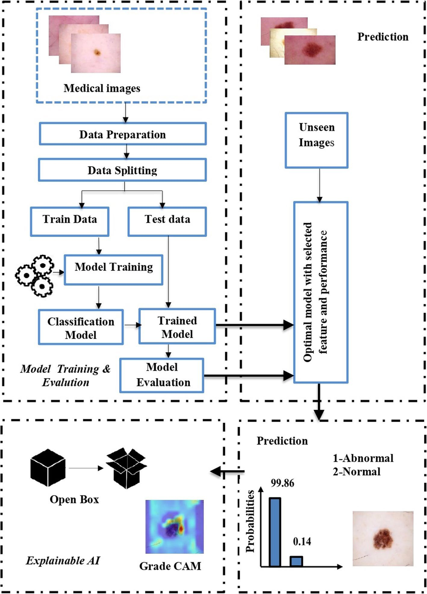
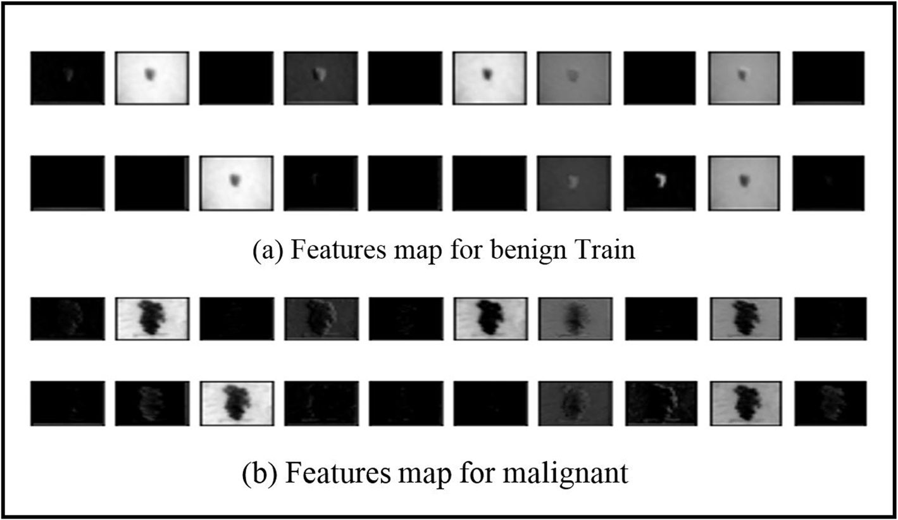
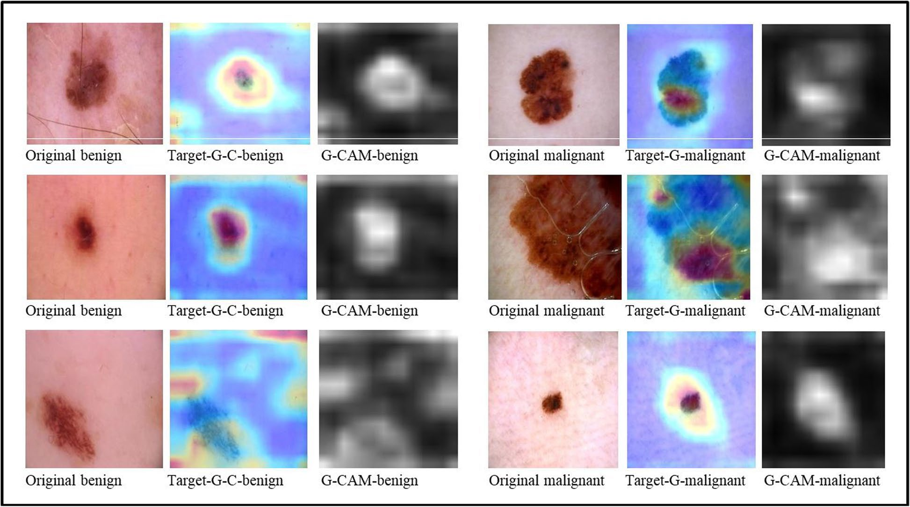
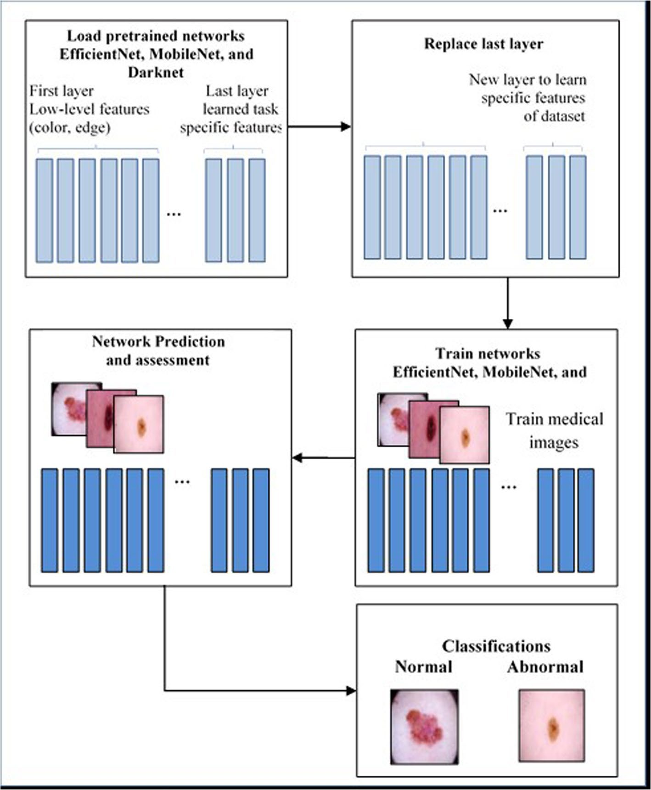
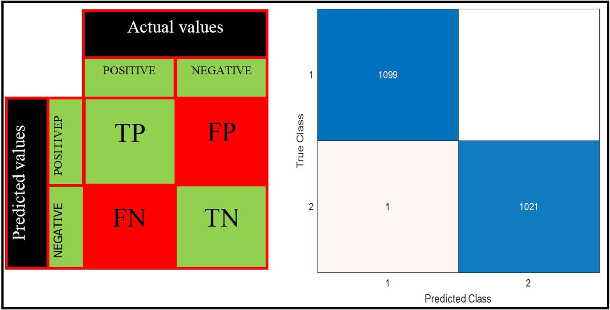
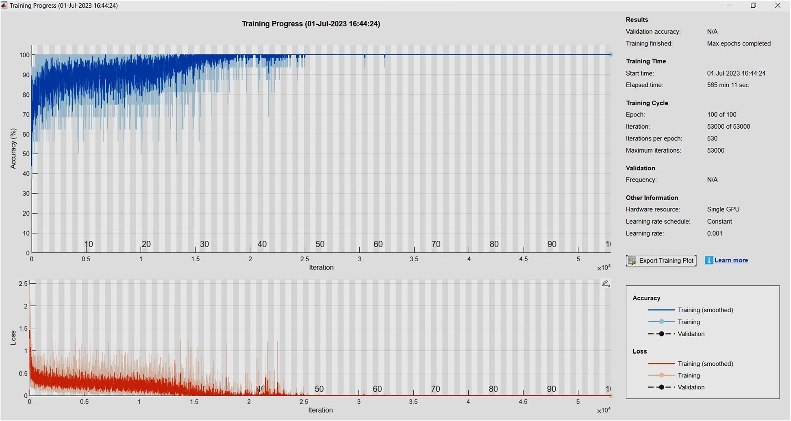
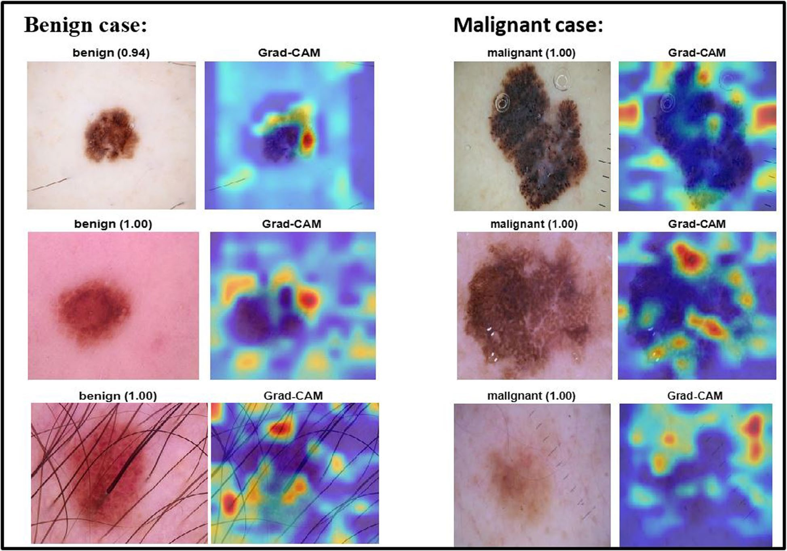
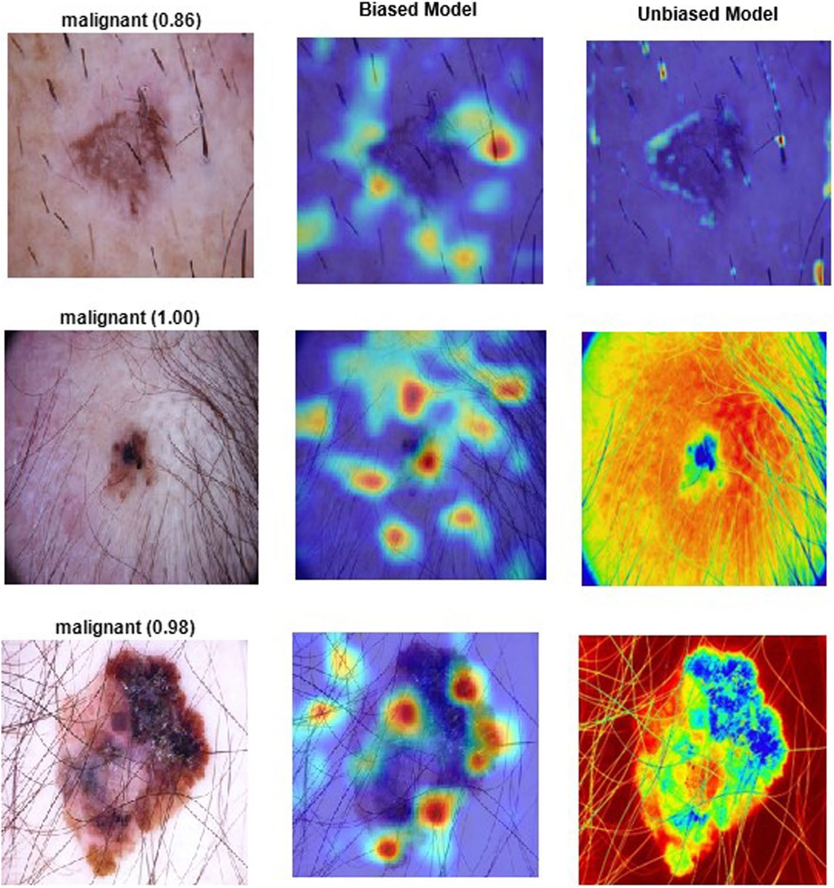

This paper introduces SkinWiseNet (SWNet), a deep
convolutional neural network designed for the detection
and automatic classification of potentially malignant
skin cancer conditions. SWNet optimizes feature
extraction through multiple pathways, emphasizing
network width augmentation to enhance efficiency. The
proposed model addresses potential biases associated
with skin conditions, particularly in individuals with
darker skin tones or excessive hair, by incorporating
feature fusion to assimilate insights from diverse
datasets. Extensive experiments were conducted using
publicly accessible datasets to evaluate SWNet's
effectiveness. This study utilized four
datasets-Mnist-HAM10000, ISIC2019, ISIC2020, and
Melanoma Skin Cancer-comprising skin cancer images
categorized into benign and malignant classes.
Explainable Artificial Intelligence (XAI) techniques,
specifically Grad-CAM, were employed to enhance the
interpretability of the model's decisions. Comparative
analysis was performed with three pre-existing deep
learning networks-EfficientNet, MobileNet, and Darknet.
The results demonstrate SWNet's superiority, achieving
an accuracy of 99.86% and an F1 score of 99.95%,
underscoring its efficacy in gradient propagation and
feature capture across various levels. This research
highlights the significant potential of SWNet in
advancing skin cancer detection and classification,
providing a robust tool for accurate and early
diagnosis. The integration of feature fusion enhances
accuracy and mitigates biases associated with hair and
skin tones. The outcomes of this study contribute to
improved patient outcomes and healthcare practices,
showcasing SWNet's exceptional capabilities in skin
cancer detection and classification.
Method Flow
Dataset
HAM10000, ISIC, Melanoma Skin
Preprocessing
Resize to 224 x 224 RGB
SWNet
Multi-path CNN + feature fusion
Grad-CAM
Visual explanation of attention
Results
Metrics, bias checks, comparison
Key Findings
Strong headline performance, but dataset
robustness remains the central caveat.
99.86%
Accuracy
99.95%
F1 Score
Cross-dataset caveat
HAM10000 reports
81.93% accuracy but only
43.79% F1, showing that the
headline Melanoma Skin result should not be
treated as universal.
Problem
Manual skin cancer screening is expert-dependent and can
be affected by visual confounders such as skin tone,
hair, imaging artifacts, and lesion variability. The
study asks whether a widened CNN with feature fusion can
improve classification while keeping predictions
inspectable.
Research Questions
Can a custom CNN outperform EfficientNet, MobileNet,
and Darknet for benign/malignant classification?
Can multi-level feature fusion reduce shortcuts from
artifacts, hair, and skin-tone variation?
Can Grad-CAM make model attention transparent enough
for clinical review?
The examples show why the task is not just color
matching: benign and malignant lesions vary in border
irregularity, texture, contrast, and surrounding skin
appearance. This visual diversity motivates both feature
fusion and cross-dataset evaluation.
Methodology Overview

Generated overview of the SWNet workflow
The method takes a resized lesion image, extracts
parallel CNN features, fuses those feature streams, uses
Grad-CAM to visualize model focus, and outputs a
benign/malignant prediction.
This visual replaces the long methodology explanation:
the key idea is not just depth, but keeping multiple
evidence routes active until feature fusion.
SWNet Architecture

Widened multi-path CNN
This is the main technical figure. The repeated
Conv-BN-ReLU blocks extract features, while the
concatenation modules preserve information from parallel
paths. That design is intended to improve gradient flow
and capture useful cues at multiple visual scales.
Classification Pipeline

Preprocess, train, classify, evaluate
The pipeline connects data preparation to model
evaluation: images are standardized, passed through
SWNet and baseline networks, classified as
benign/malignant, then assessed using accuracy,
precision, recall, specificity, and F1 score.
Feature Fusion + XAI

Fusion structure
Feature fusion combines information from multiple
sources and model levels to reduce overfitting and
expose the classifier to broader lesion variation.
Grad-CAM highlights the regions that most influence each
predicted class.
The fusion diagram is important because the paper treats
fusion as both a performance strategy and a fairness
strategy: broader feature exposure may reduce reliance
on dataset-specific artifacts such as hair, dark
backgrounds, and circular microscope borders.
Grad-CAM Explanations

Model attention across selected layers
These heatmaps show where SWNet places visual attention.
For clinical decision support, this matters because a
high-confidence model is less useful if it focuses on
irrelevant background artifacts instead of lesion
morphology.
Architecture Details
Input layer crops/resizes images to 224 x 224 x 3.
Thirty-three 3 x 3 convolution layers; 9,368,192
convolution kernels.
Batch normalization between convolution and ReLU
layers.
Four concatenation blocks merge parallel feature
streams.
Global average pooling plus three fully connected
layers.
Dropout reduces overfitting before the final Softmax
classifier.

Transfer-learning baselines
Headline Results
99.86%
Accuracy
99.95%
F1 Score
100%
Precision
20 ms
Recognition
Peak result reported on the Melanoma Skin Cancer
dataset.
Baseline + Robustness
Model
Acc.
F1
EfficientNet
91.88
86.39
MobileNet
93.20
92.23
Darknet
94.44
92.17
SWNet
99.86
99.95
Cross-dataset caveat: HAM10000 reaches
81.93% accuracy but only 43.79% F1; ISIC2019-2020
reaches 91.09% accuracy and 89.70% F1.
Why F1 Matters
Accuracy can look acceptable when one class dominates
the dataset. F1 combines precision and recall, so it
punishes models that miss too many malignant cases or
over-predict one class.
81.93%
HAM10000 Accuracy
43.79%
HAM10000 F1
This gap is one of the poster's most important
critiques: SWNet's peak result is strong, but class
balance and dataset composition can sharply change
practical reliability.
Training Evidence

Confusion matrix
The confusion matrix shows how SWNet distributes
predictions across benign and malignant classes. It is
useful for spotting false positives and false negatives,
which matter more clinically than overall accuracy
alone.

Training curves
The training curves show how accuracy and loss evolve
over 100 epochs. They support the reported convergence,
but should still be interpreted alongside external
validation and cross-dataset performance.
Predictions + XAI

Predicted samples with explainable AI overlays
The prediction examples combine the class output with
visual explanation. This helps communicate not only what
SWNet predicted, but also which lesion regions
contributed most strongly to that prediction.
Bias Mitigation
The study identifies risks from microscope artifacts,
dark backgrounds, underrepresented skin types, and hair
coverage. Feature fusion is framed as a way to broaden
model exposure and reduce shortcut learning.

Hair-related bias challenge
Hair can obscure lesion boundaries and introduce
high-contrast patterns that resemble diagnostically
meaningful structures. The paper argues that feature
fusion across diverse datasets can help reduce this kind
of spurious attention.
Limitations + Conclusion
Limitations: large image
storage/processing cost; tuning complexity as datasets
scale; dependence on preprocessing; low F1 on imbalanced
datasets; need for real-world clinical validation.
Future work: use clinically collected
datasets, improve underrepresented classes, test
alternative architectures, optimize for real-time
deployment, and run longitudinal evaluation.
Conclusion: SWNet is promising and
interpretable, but its practical value depends on
validation across broader, demographically balanced
clinical data.
References
Primary paper: Abdulredah AA,
Fadhel MA, Alzubaidi L, Duan Y, Kherallah M, Charfi
F. Towards unbiased skin cancer classification using
deep feature fusion.
BMC Medical Informatics and Decision Making. 2025;25:48.
Selected cited works: [28] Tahir M
et al. DSCC_Net. Cancers. 2023;15:2179.
[30] Waheed S et al. CNN melanoma classification.
Malays J Fundam Appl Sci. 2023;19:299-305.
[31] Dahdouh Y et al. Deep/reinforcement learning
for skin cancer classification. 2023. [37]
MobileNet. [42] EfficientNet. [43] Darknet. [54]
Grad-CAM-based explainable AI.
Data sources: Kaggle HAM10000,
ISIC2019, ISIC2019-2020 melanoma dataset, and Melanoma
Skin Cancer dataset.